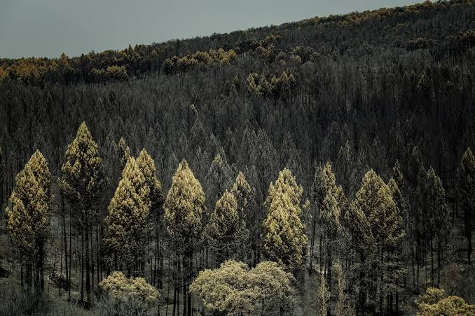
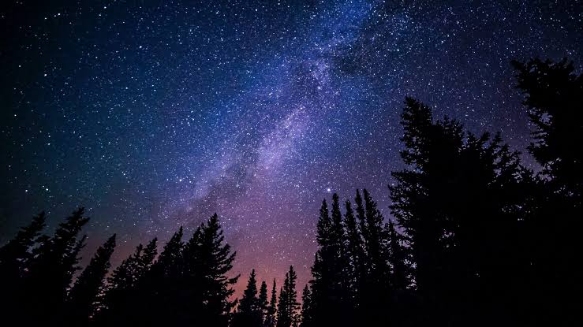

Hábitat y curiosidades
Los búhos viven en bosques, montañas, desiertos y zonas agrícolas. Muchos anidan en huecos de árboles, rocas o edificios abandonados.
Son animales de hábitos nocturnos: duermen durante el día camuflados y salen a cazar al anochecer, guiándose por su vista y su oído muy desarrollados.
Después de comer, expulsan por el pico bolitas con los huesos y el pelo que no pueden digerir, y los científicos las estudian para conocer su dieta.

Bosques
Hábitat favorito de muchas especies.
Montañas
Algunas especies anidan entre rocas.

Noche
Su momento de mayor actividad.
Datos curiosos Búhos
- Un grupo de búhos se llama parlamento.
- Su vuelo es casi silencioso.
- Pueden girar la cabeza unos 270 grados.
- Viven en todos los continentes menos la Antártida.
Giro de la cabeza: 270° de 360°